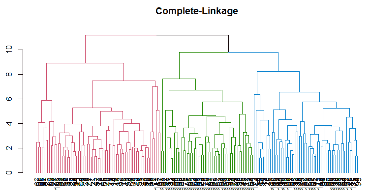
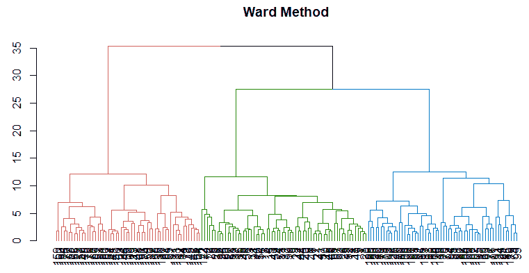
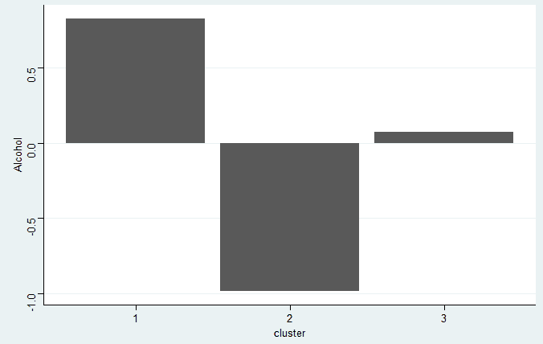
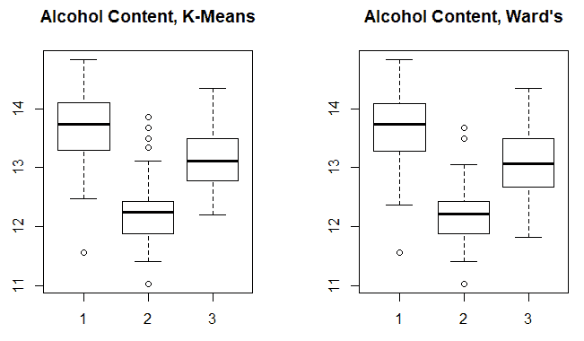

脉冲幅度调制 （Pulse Amplitude Modulation 的缩写）
对于 PAM ，我们先定义一个 medoid 。
medoid 是一个聚类的观测值，它最小化该聚类中其他观测值之间的不相似性(在我们的示例中，使用高尔度量计算)。因此，类似于 k-means，如果您指定五个聚类，您将有五个数据分区。
PAM 算法的目标是最小化所有观测值与最接近的 medoid 的不相似性，它迭代以下步骤:
- 随机选择 k 个观测值作为初始中间值
- 将每个观测值分配给最近的中位形
- 交换每个中值和非中值观测值，计算不同的代价
- 选择使总差异最小化的配置
- 重复步骤 2 到 4，直到水母没有变化
Gower 和 PAM 都可以使用 r 中的cluster包来调用。对于 Gower，我们将使用daisy()函数来计算相异矩阵，并使用pam()函数来进行实际分区。至此，让我们开始测试这些方法。
随机森林
就像我们在处理混合的，实际上是杂乱的数据时使用高尔度量的动机一样，我们可以以一种无人监管的方式应用随机森林。选择这种方法有许多优点:
- 对异常值和高度偏斜变量具有鲁棒性
- 不需要转换或缩放数据
- 处理混合数据(数字和因子)
- 可以容纳丢失的数据
- 可用于具有大量变量的数据；事实上，它可以通过检查可变的重要性来消除无用的特征
- 产生的相异度矩阵用作前面讨论的其他技术(分层、k-均值和 PAM)的输入
几句警告的话。可能需要一些试错法来根据在每个树分裂处采样的变量数量(函数中的mtry = ?)和生长的树的数量适当地调整随机森林。研究表明，在一定程度上，种植的树木越多，效果越好，一个好的起点是种植 2000 棵树(施，，s，2006)。
给定一个没有标签的数据集，算法是这样工作的:
- 当前观察到的数据被标记为类别 1
- 创建与观测数据大小相同的第二组(综合)观测值；这是通过对观测数据中的每个要素进行随机采样而创建的，因此，如果有 20 个观测要素，则有 20 个合成要素
- 数据的合成部分被标记为类 2，这有助于使用随机森林作为人工分类问题
- 创建一个随机森林模型来区分这两个类别
- 将仅由观察数据(合成数据现在被丢弃)构成的模型的接近度度量转换为相异度矩阵
- 利用相异度矩阵作为聚类输入特征
那么这些接近度到底是什么呢？
邻近度量是所有观察值之间的成对度量。如果两个观察结果出现在树的同一个终端节点，则它们的邻近分数等于 1，否则为零。
在随机森林运行结束时，通过除以树的总数来归一化观察数据的接近度分数。所得到的 NxN 矩阵包含 0 到 1 之间的分数，当然对角线值都是 1。这就是全部了。这是一种有效的技术，我认为它没有被充分利用，我希望我几年前就学会了。
数据集背景
直到一年前，我还不知道全世界只有不到 300 名注册品酒师。这项考试由高级品酒师法庭管理，因其要求和高失败率而臭名昭著。
备受好评的纪录片 Somm 详细描述了几个追求认证的个人的考验、磨难和奖励。因此，在这个练习中，我们将试着帮助一个努力成为品酒师大师的假想个体找到意大利葡萄酒的潜在结构。
数据理解和准备
让我们从安装本章所需的 R 包开始，如果您还没有这样做的话:
> library(magrittr)
> install.packages("cluster")
> install.packages("dendextend")
> install.packages("ggthemes")
> install.packages("HDclassif")
> install.packages("NbClust")
> install.packages("tidyverse")
> options(scipen=999)
数据集在HDclassif包中。加载数据并用str()功能检查结构:
> library(HDclassif)
> data(wine)
> str(wine)
'data.frame': 178 obs. of 14 variables:
$ class: int 1 1 1 1 1 1 1 1 1 1 ...
$ V1 : num 14.2 13.2 13.2 14.4 13.2 ...
$ V2 : num 1.71 1.78 2.36 1.95 2.59 1.76 1.87 2.15 1.64 1.35 ...
$ V3 : num 2.43 2.14 2.67 2.5 2.87 2.45 2.45 2.61 2.17 2.27 ...
$ V4 : num 15.6 11.2 18.6 16.8 21 15.2 14.6 17.6 14 16 ...
$ V5 : int 127 100 101 113 118 112 96 121 97 98 ...
$ V6 : num 2.8 2.65 2.8 3.85 2.8 3.27 2.5 2.6 2.8 2.98 ...
$ V7 : num 3.06 2.76 3.24 3.49 2.69 3.39 2.52 2.51 2.98 3.15 ...
$ V8 : num 0.28 0.26 0.3 0.24 0.39 0.34 0.3 0.31 0.29 0.22 ...
$ V9 : num 2.29 1.28 2.81 2.18 1.82 1.97 1.98 1.25 1.98 1.85 ...
$ V10 : num 5.64 4.38 5.68 7.8 4.32 6.75 5.25 5.05 5.2 7.22 ...
$ V11 : num 1.04 1.05 1.03 0.86 1.04 1.05 1.02 1.06 1.08 1.01 ...
$ V12 : num 3.92 3.4 3.17 3.45 2.93 2.85 3.58 3.58 2.85 3.55 ...
$ V13 : int 1065 1050 1185 1480 735 1450 1290 1295 1045 1045 ...
该数据由 178 种葡萄酒组成，具有 13 个化学成分变量和一个变量Class，即栽培品种或植物品种的标签。我们不会在聚类中使用它，而是作为模型性能的测试。变量V1到V13是化学成分的测量值，如下所示:
- V1:酒精
- V2:苹果酸
- V3:灰烬
- V4:灰分的碱度
- V5:镁
- V6:总酚
- V7:黄酮类化合物
- V8:非类黄酮酚类
- V9:原花色素
- V10:色彩强度
- V11:色调
- V12 : OD280/OD315
- V13:脯氨酸
变量都是定量的。我们应该将它们重命名为对我们的分析有意义的名称。使用colnames()功能很容易做到这一点:
> colnames(wine) <- c(
"Class",
"Alcohol",
"MalicAcid",
"Ash",
"Alk_ash",
"magnesium",
"T_phenols",
"Flavanoids",
"Non_flav",
"Proantho",
"C_Intensity",
"Hue",
"OD280_315",
"Proline"
)
由于变量没有缩放，我们需要使用scale()函数来完成。这将首先使数据居中，从列中的每个个体中减去列平均值。然后，居中的值将除以相应列的标准偏差。我们还可以使用这种转换来确保我们只包含第 2 到第 14 列，删除 class 并将其放入数据框中。这都可以通过一行代码来完成:
> wine_df <- as.data.frame(scale(wine[, -1]))
在继续之前，出于好奇，让我们做一个快速表格来看看品种的分布或Class:
> table(wine$Class)
1 2 3
59 71 48
我们现在可以转向无监督学习模型。
建模
创建了我们的数据框架df，我们可以开始开发聚类算法。我们将从层次结构开始，然后尝试 k-means。在此之后，我们将需要操纵我们的数据一点点，以演示如何将混合数据与高尔和随机森林。
分层聚类
要在 R 中构建一个层次集群模型，您可以利用基本stats包中的hclust()函数。该函数需要的两个主要输入是距离矩阵和聚类方法。距离矩阵很容易用dist()函数完成。对于距离，我们将使用欧几里得距离。有多种聚类方法可用，默认情况下hclust()是完全链接。
我们会试试这个，但是我也推荐沃德的联动法。沃德的方法倾向于产生具有相似数量的观察值的聚类。
完全连锁法得出任意两个聚类之间的距离，即一个聚类中任意一个观测值与另一个聚类中任意一个观测值之间的最大距离。沃德的连锁法试图将观察值进行聚类，以使组内平方和最小化。
值得注意的是，R 方法ward.D2使用的是平方欧氏距离，这的确是沃德连锁法。在 R 中，ward.D是可用的，但要求距离矩阵是平方值。因为我们将建立一个非平方值的距离矩阵，我们将需要ward.D2。
现在，最大的问题是我们应该创建多少个集群？如引言中所述，简短的、可能不太令人满意的答案是视情况而定。尽管有集群有效性测量来帮助解决这一困境——我们将会看到——但它确实需要对业务环境、底层数据以及坦率地说，试错法的深入了解。由于我们的侍酒师伙伴是虚构的，我们将不得不依靠有效性措施。然而，这并不是选择聚类数的灵丹妙药，因为有几十种有效性度量。
由于探究大量聚类有效性度量的优缺点超出了本章的范围，我们可以求助于一些论文，甚至 R 本身来简化这个问题。Miligan 和 Cooper 在 1985 年发表的一篇论文中探讨了 30 种不同测量/指数对模拟数据的影响。表现最好的五家是 CH 指数、杜达指数、Cindex、Gamma 和 Beale 指数。另一个众所周知的确定集群数量的方法是间隙统计 (Tibshirani，Walther，和 Hastie，2001)。如果你的好奇心战胜了你，这是两篇很好的论文供你研究。
使用 R，我们可以使用NbClust包中的NbClust()函数来提取 23 个指数的结果，包括来自 Miligan 和 Cooper 的前五个指数以及 gap 统计数据。您可以在软件包的帮助文件中看到所有可用索引的列表。有两种方法可以接近这个过程:一种是选择你最喜欢的一个或多个指数并用 R 调用它们；另一种方法是将它们都包含在分析中，并采用多数规则方法，函数会很好地为您总结这种方法。该函数也将生成几幅图。
有了舞台布景，让我们浏览一下使用完整链接方法的示例。使用函数时，除了关联之外，您还需要指定最小和最大聚类数、距离测量值和指数。正如你在下面的代码中看到的，我们将创建一个名为numComplete的对象。函数规范针对欧几里德距离、最小聚类数 2、最大聚类数 6、完全连锁和所有索引。当您运行该命令时，该函数将自动生成类似于您在此处看到的输出—关于图形方法和多数规则的讨论结论:
> numComplete <- NbClust::NbClust(
wine_df,
distance = "euclidean",
min.nc = 2,
max.nc = 6,
method = "complete",
index = "all"
)
*** : The Hubert index is a graphical method of determining the number of clusters.
In the plot of Hubert index, we seek a significant knee that corresponds to a
significant increase of the value of the measure that is, the significant peak in Hubert
index second differences plot.
*** : The D index is a graphical method of determining the number of clusters.
In the plot of D index, we seek a significant knee (the significant peak in Dindex
second differences plot) that corresponds to a significant increase of the value of
the measure.
*******************************************************************
* Among all indices:
* 1 proposed 2 as the best number of clusters
* 11 proposed 3 as the best number of clusters
* 6 proposed 5 as the best number of clusters
* 5 proposed 6 as the best number of clusters
***** Conclusion *****
* According to the majority rule, the best number of clusters is 3
*******************************************************************
使用多数规则方法，我们将选择三个集群作为最佳解决方案，至少对于分层集群来说是这样。生成的两个图各包含两个图形。正如前面的输出所述，您正在图中寻找一个明显的拐点(图的左侧)和图的峰值(图的右侧)。这是休伯特指数图:

您可以看到弯曲或膝盖位于左侧图表中的三个集群处。此外，右侧的图表在三个集群处达到峰值。下面的 Dindex 图提供了相同的信息:
你可以用这个函数调用很多值，我想展示其中一个。该输出是每个索引的最佳聚类数以及相应聚类数的索引值。这是用$Best.nc完成的。我将输出简化为前几个索引:
> numComplete$Best.nc
KL CH Hartigan CCC Scott
Number_clusters 5.0000 3.0000 3.0000 5.000 3.0000
Value_Index 14.2227 48.9898 27.8971 1.148 340.9634
您可以看到，第一个索引KL的最佳聚类数为 5，下一个索引CH的最佳聚类数为 3。
使用三个集群作为推荐选择，我们现在将计算距离矩阵并构建我们的分层集群对象。这将构建距离矩阵:
> euc_dist <- dist(wine_df, method = "euclidean")
然后，我们将使用这个矩阵作为使用hclust()进行实际聚类的输入:
> hc_complete <- hclust(euc_dist, method = "complete")
可视化层次聚类的常用方法是绘制一个树状图。我们将通过dendextend包提供的功能来实现这一点:
> dend1 <- dendextend::color_branches(dend_complete, k = 3)
> plot(dend1, main = "Complete-Linkage")
上述代码的输出如下:

树状图是一个树形图，向您显示各个观察值是如何聚集在一起的。连接的排列(分支，如果你愿意的话)告诉我们哪些观察是相似的。分支的高度表示距离矩阵中的观测值彼此相似或不相似的程度。
以下是集群计数表:
> complete_clusters <- cutree(hc_complete, 3)
> table(complete_clusters)
complete_clusters
1 2 3
69 58 51
出于好奇，让我们比较一下这种聚类算法与品种标签的对比情况:
> table(complete_clusters, wine$Class)
complete_clusters 1 2 3
1 51 18 0
2 8 50 0
3 0 3 48
在该表中，行是簇，列是栽培品种。这种方法与品种标签的匹配率为 84%。请注意，我们并不试图使用聚类来预测栽培品种，在这个例子中，我们没有先验的理由来将聚类与栽培品种相匹配，但这仍然是有启发性的。
我们现在将尝试沃德的联系。这是和以前一样的代码；它首先试图确定集群的数量，这意味着我们需要将方法改为Ward.D2:
> numWard <- NbClust::NbClust(
wine_df,
distance = "euclidean",
min.nc = 2,
max.nc = 6,
method = "ward.D2",
index = "all"
)
# Output abbreviated to just show the algorithm's conclusion.
***** Conclusion *****
* According to the majority rule, the best number of clusters is 3
同样，多数规则适用于三集群解决方案。我会让你自己看情节的。
让我们转到沃德连锁反应的实际聚类和生成树状图:
> hc_ward <- hclust(euc_dist, method = "ward.D2")
> dend_ward <- as.dendrogram(hc_ward)
> dend2 <- dendextend::color_branches(dend_ward, k = 3)
> plot(dend2, main = "Ward Method")
这是输出:

该图显示了三个大小大致相等的截然不同的星团。让我们计算聚类大小，并显示它与品种标签的关系:
> ward_clusters <- cutree(hc_ward, 3)
> table(ward_clusters, wine$Class)
ward_clusters 1 2 3
1 59 5 0
2 0 58 0
3 0 8 48
因此，分类 1 有 64 个观察值，分类 2 有 58 个，分类 3 有 56 个。这种方法比使用完全连锁更接近品种类别。
通过另一个表格，我们可以比较这两种方法如何匹配观测值:
> table(complete_clusters, ward_clusters)
ward_clusters
complete_clusters 1 2 3
1 53 11 5
2 11 47 0
3 0 0 51
虽然每种方法的第三类都是精确的，但其他两类却不是。现在的问题是，我们如何识别解释上的差异？在许多示例中，数据集非常小，您可以查看每个聚类的标签。在现实世界中，这通常是不可能的。我喜欢按类汇总结果，并据此进行比较。
将按聚类汇总的结果放入交互式电子表格或商业智能工具中有助于您和您的业务合作伙伴的理解，有助于选择适当的聚类方法和聚类数。
我将通过查看 Ward 方法中按聚类分组的特征的平均值来演示这一点。首先，使用缩放后的数据(或者原始数据，如果您愿意)和结果创建一个单独的数据框:
> ward_df <- wine_df %>%
dplyr::mutate(cluster = ward_clusters)
现在，进行汇总:
> ward_df %>%
dplyr::group_by(cluster) %>%
dplyr::summarise_all(dplyr::funs(mean)) -> ward_results
现在，您可以在 RStudio 中查看该数据框，或者将其导出到您喜欢的 BI 工具中。也许你对某个情节感兴趣？如果是这样，试试这个:
> ggplot2::ggplot(ward_results, ggplot2::aes(cluster, Alcohol)) +
ggplot2::geom_bar(stat = "identity") +
ggthemes::theme_stata()
这是输出:

在酒精含量的聚类之间存在明显的分离。话虽如此，让我们继续 k-means。
k 均值聚类
正如我们对层次聚类所做的那样，我们也可以使用NbClust()来确定 k-means 的最佳聚类数。你需要做的就是在函数中指定kmeans作为方法。让我们把最大集群数放宽到15。我将下面的输出简化为结论:
> numKMeans <- NbClust::NbClust(wine_df,
min.nc = 2,
max.nc = 15,
method = "kmeans")
***** Conclusion *****
* According to the majority rule, the best number of clusters is 3
同样，三个集群似乎是最佳解决方案。
在 R 中，我们可以使用kmeans()函数来做这个分析。除了输入数据之外，我们还必须指定我们正在求解的聚类数和随机赋值的值，即nstart参数。我们还需要指定一个随机种子:
> set.seed(1234)
> km <- kmeans(df, 3, nstart = 25)
创建一个聚类表可以让我们了解它们之间的观察分布情况:
> table(km$cluster)
1 2 3
62 65 51
每个集群的观测值数量非常均衡。我在很多情况下看到，对于更大的数据集和更多的特征，任何数量的 k-means 都不能产生有希望和令人信服的结果。分析聚类的另一种方法是查看每个聚类中每个变量的聚类中心矩阵:
> km$centers
Alcohol MalicAcid Ash Alk_ash magnesium T_phenols
1 0.8328826 -0.3029551 0.3636801 -0.6084749 0.57596208 0.88274724
2 -0.9234669 -0.3929331 -0.4931257 0.1701220 -0.49032869 -0.07576891
3 0.1644436 0.8690954 0.1863726 0.5228924 -0.07526047 -0.97657548
Flavanoids Non_flav Proantho C_Intensity Hue OD280_315
1 0.97506900 -0.56050853 0.57865427 0.1705823 0.4726504 0.7770551
2 0.02075402 -0.03343924 0.05810161 -0.8993770 0.4605046 0.2700025
3 -1.21182921 0.72402116 -0.77751312 0.9388902 -1.1615122 -1.2887761
Proline
1 1.1220202
2 -0.7517257
3 -0.4059428
请注意，集群一平均酒精含量较高。让我们制作一个方框图来观察酒精含量的分布，并与沃德的进行比较:
> par(mfrow = c(1, 2))
> boxplot(wine$Alcohol ~ km$cluster, data = wine,
main = "Alcohol Content, K-Means")
> boxplot(wine$Alcohol ~ ward_clusters, data = wine,
main = "Alcohol Content, Ward's")
这是输出:

每个集群的酒精含量几乎完全相同。从表面上看，这告诉我，三个聚类是葡萄酒的合适的潜在结构，使用 k-means 或层次聚类之间没有什么区别。最后，让我们对 k 均值聚类和品种进行比较:
> table(km$cluster, wine$Class)
1 2 3
1 59 3 0
2 0 65 0
3 0 3 48
这与沃德的方法产生的分布非常相似，任何一种都可能被我们假设的侍酒师接受。
但是，为了演示如何对具有数值和非数值的数据进行聚类，我们来看一些例子。
高尔和帕姆
为了开始这一步，我们需要稍微整理一下我们的数据。由于这种方法可以获取作为因子的变量，我们将酒精转换为高或低含量。利用ifelse()函数将变量改为因子也只需要一行代码。这将实现的是，如果酒精大于零，它将是High，否则，它将是Low:
> wine_df$Alcohol <- as.factor(ifelse(df$Alcohol > 0, "High", "Low"))
我们现在准备使用cluster包中的daisy()函数创建相异度矩阵，并将方法指定为gower:
> gower_dist <- cluster::daisy(wine[, -1], metric = "gower")
集群对象的创建是通过pam()函数完成的，它是cluster包的一部分。在本例中，我们将创建三个集群，并创建一个集群大小表:
> set.seed(123)
> pam_cluster <- cluster::pam(gower_dist, k = 3)
> table(pam_cluster$clustering)
1 2 3
62 71 45
现在，让我们看看它与品种标签相比表现如何:
> table(pam_cluster$clustering, wine$Class)
1 2 3
1 57 5 0
2 2 64 5
3 0 2 43
如前所述，您可以使用这种方法运行类似的聚合和探索练习。让我们看看酒精在三个集群中的分布情况:
> table(pam_cluster$clustering, wine$Alcohol)
High Low
1 62 0
2 1 70
3 29 16
此表显示了按分类列出的因子级别的比例。高尔度量对于带有标签、因子、字符、缺失值等的数据非常强大。我强烈推荐。任何距离矩阵的一个缺点是，它可能成为大型数据集的计算问题。一个有效的解决方案是运行 k 样本并比较结果。做得好的话，您就可以构建一个分类器来预测您的人群的聚类。
最后，我们将使用随机森林创建一个相异矩阵，并使用 PAM 创建三个集群。
随机森林和帕姆
要在 R 中执行这个方法，可以使用randomForest()函数。设置随机种子后，只需创建模型对象。在下面的代码中，我将树的数量指定为2000，并将邻近度设置为TRUE。您不必对缩放后的数据运行此操作:
> set.seed(1918)
> rf <- randomForest::randomForest(x = wine[, -1], ntree = 2000, proximity = T)
> rf
Call:
randomForest(x = wine[, -1], ntree = 2000, proximity = T)
Type of random forest: unsupervised
Number of trees: 2000
No. of variables tried at each split: 3
正如您所看到的，调用rf并没有提供任何有意义的输出，除了在每次分割时采样的变量(mtry)。让我们检查一下 N x N 矩阵的前五行和前五列:
> dim(rf$proximity)
[1] 178 178
> rf$proximity[1:5, 1:5]
1 2 3 4 5
1 1.0000000 0.27868852 0.4049296 0.36200717 0.12969283
2 0.2786885 1.00000000 0.2142857 0.12648221 0.04453441
3 0.4049296 0.21428571 1.0000000 0.26865672 0.14942529
4 0.3620072 0.12648221 0.2686567 1.00000000 0.07692308
5 0.1296928 0.04453441 0.1494253 0.07692308 1.00000000
考虑这些值的一种方式是，它们是这两个观察值出现在相同终端节点中的次数百分比！看看可变重要性，我们看到转换后的Alcohol输入可能会被丢弃。为了简单起见，我们将保留它:
> randomForest::importance(rf)
MeanDecreaseGini
Alcohol 3.692748
MalicAcid 12.650096
Ash 10.842885
Alk_ash 11.636227
magnesium 10.672465
T_phenols 17.733783
Flavanoids 21.410838
Non_flav 11.527873
Proantho 14.494229
C_Intensity 14.795900
Hue 14.296274
OD280_315 17.815508
Proline 15.922621
现在只是创建相异度矩阵的问题，该矩阵将邻近度值(平方根(1 -邻近度))转换如下:
> rf_dist <- sqrt(1 - rf$proximity)
> rf_dist[1:2, 1:2]
1 2
1 0.0000000 0.8493006
2 0.8493006 0.0000000
我们现在已经有了输入特性，所以让我们像前面一样运行一个 PAM 集群:
> set.seed(1776)
> pam_rf <- cluster::pam(rf_dist, k = 3)
> table(pam_rf$clustering)
1 2 3
52 82 44
> table(pam_rf$clustering, wine$Class)
1 2 3
1 52 0 0
2 7 70 5
3 0 1 43
这些结果与所应用的其他技术相当。学到了什么？如果对于聚类问题，您有杂乱的数据，可以考虑使用随机森林来创建距离矩阵，甚至从您的聚类算法中消除特征。
摘要
在这一章，我们开始探索无监督学习技术。我们专注于聚类分析，以提供数据简化和对观察结果的数据理解。
介绍了四种方法:传统的分层和 k-means 聚类算法，以及 PAM，结合了两种不同的输入(Gower 和 random forest)。我们应用这四种方法来寻找来自三个不同品种的意大利葡萄酒的结构，并检查结果。
在下一章中，我们将继续探索无监督学习，但不是在观察值中寻找结构，而是集中在变量中寻找结构，以便创建可用于监督学习问题的新特征。